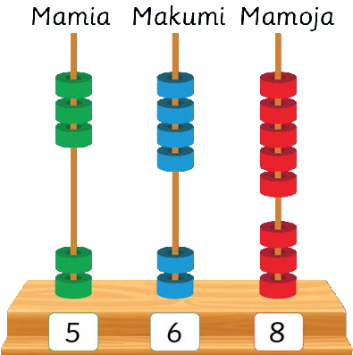

Au
223 + 345 =

Hatua
1.Jumlisha mamoja: 3 + 5 = 8. Andika 8 kwenye nafasi ya mamoja. 223 + 345 = 8.Hatua ya kwanza.
2.Jumlisha makumi: 2 + 4 = 6. Andika 6 kwenye nafasi ya makumi. 223 + 345 = 68.Hatua ya pili.
3.Jumlisha mamia: 2 + 3 = 5. Andika 5 kwenye nafasi ya mamia. 223 + 345 = 568.Hatua ya tatu.
Kwa hiyo, 223 + 345 = 568.
Mfano wa pili
512 + 415 =
Hatua
1.Jumlisha mamoja: 2 + 5 = 7. Andika 7 kwenye nafasi ya mamoja. 512 + 415 = 7.Hatua ya kwanza.
2.Jumlisha makumi: 1 + 1 = 2. Andika 2 kwenye nafasi ya makumi. 512 + 415 = 27.Hatua ya pili.
34